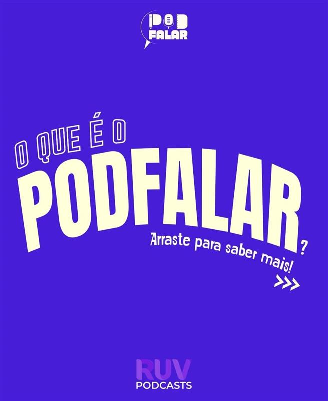

O projeto POD Falar, uma iniciativa de extensão universitária da Unesp em parceria com a Escola Estadual Azarias Leite e a RUV/FAAC, envolve alunos do terceiro ano do Ensino Médio, dentro da disciplina de Artes e Mídias Digitais, e tem como objetivo ampliar o diálogo sobre as demandas dos estudantes das escolas públicas de Bauru. Entre suas metas, está o combate ao sentimento de invisibilidade social dos jovens nas escolas, a democratização do acesso a ferramentas digitais, como o podcasting, e o desenvolvimento de habilidades comunicativas fundamentais para uma formação crítica voltada à cidadania. A proposta consiste em transformar as reflexões e demandas desses jovens em produtos sonoros, criando um espaço de diálogo entre os estudantes e a sociedade.
Meu nome é Enzo Abilio e junto com meus colegas Luiza Miranda, Lavinia Vieira e João P. Freitas, estamos
desenvolvendo um podcast como projeto escolar da instituição E.E. Azarias Leite, em parceria com a UNESP. Somos
estudantes do terceiro ano do
ensino médio de uma escola pública.
Estamos muito empolgados com essa iniciativa, que tem sido uma oportunidade única de aprendizado, expressão e
aprofundamento em temas complexos e provocativos.
Nosso podcast tem como tema principal o canibalismo, abordado não apenas do ponto de vista histórico e
antropológico, mas também sob a perspectiva cultural e literária. Como principal referência do tópico,
utilizamos o livro "O Jantar Secreto", de Raphael Montes, uma obra contemporânea que nos instigou a refletir
sobre os limites da moral, da sobrevivência e da sociedade de consumo.
Podfalar
